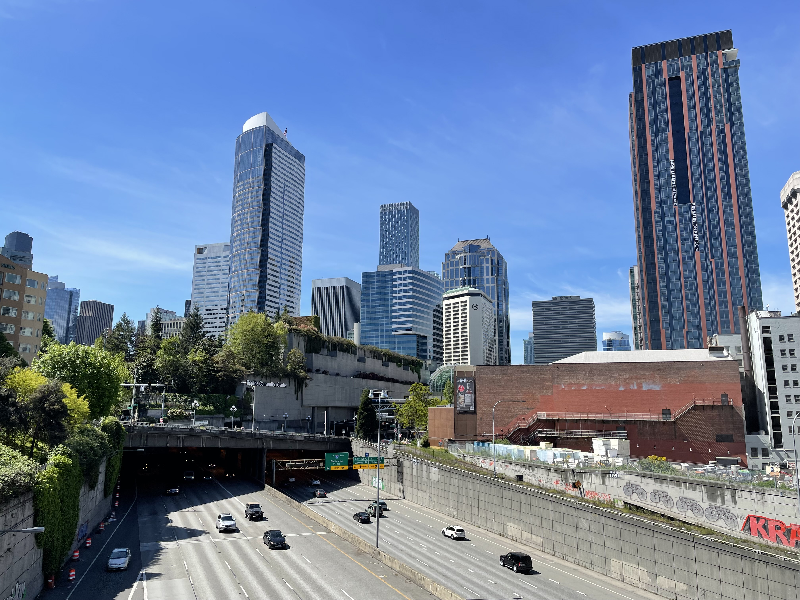

This summer, I was doing an internship as a production engineer at Meta Platforms, Inc.
The company offered me a coorporate housing during the summer and it was on Pike Street. It was very different
from Ann Arbor, where I am pursuing
my Master's Degree. This area is very modernized and it has a whole bunch of
restaurants and tall buildings. One can also find great theatres, shopping malls and
enjoyable cinemas in this place.

Neighborhood of Pike Street
Lake Union in Seattle
One thing I noticed in Seatlle is that many local people love to bring their
kayaks or paddle boards to the lake during nice days. Even there are many motorized
boats driving on the lake, they can still find a spot to fit in and enjoy their weekend.
During one weekend, I was hanging out with my friends on a rental yacht, and the captain told
us that Lakes in Seattle are always so crowded due to high volume of all kinds of boats.
Thus, it was not safe to just jump into the water and start swimming in some areas.